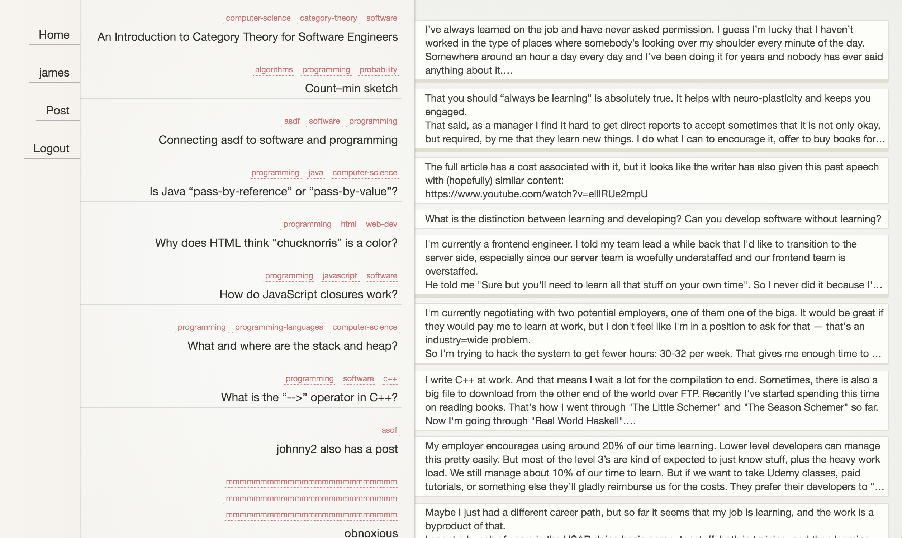

Topical is an experimental discussion platform that seeks to avoid distracting
extraneous signals and allow the user to focus solely on the content.
Topical is still under development. Content in the screenshot has been imported from Hacker News for testing purposes only. Technologies used include React, mobX, Node.js, and Postgres.
- No votes or points. Many participants on Reddit and Hacker News have by now noticed that their substantive comments are often ignored, while short, easily-digestible quips, memes, and "drive-bys" receive many points. While this is by no means a rule and many counter-examples exist, the existence of points does seem to incentivize users to optimize their posts in a direction that is at odds with considered long-form discussion. Gamification is tempting because it provides dopamine hits that drive engagement, but it has deep implications for the shape of the discourse.
- No dates. In much of today's online discussion, timeliness is a critical factor. When encountering a post that is a few days or even hours old, one often feels that the discussion has "moved on" and it's not worth trying to join in because nobody will see it. One goal of Topical is to allow users to feel at ease when taking time to respond to something, or adding to a conversation that may have started some time ago. (A notable exception is the SomethingAwful forums, known for their long-running "megathreads," but these present other issues. A newcomer is likely to feel intimidated joining a linear thread with thousands of posts. This intentional aspect of the "lurk more" ethos does have value, but also leads to cliqueness.)
- No names. This is the big one. In my research of anonymous discussion platforms (e.g. 4chan, Yik Yak, Secret, Whisper, Blind), all of them seemed to trend toward a kind of discourse that I do not wish to foster. Hiding behind anonymity often brings out the worst in people. Having a name (even a pseudonym) and a reputation to protect is an important part of our society for good reason. It's nice to know if something was written by a "known expert" or "some rando." And yet, when I instinctively check to see who authored a post, I often have a sinking feeling that I'm not doing it for the right reasons. That I'm engaging in gossip, keeping track of "who's who," following the drama as people gain and lose favor. Every (non-anonymous) forum community has its superstars, "thought leaders," and pariahs. This inevitably biases the discourse. One does envision an idealized playing field where one's words stand entirely on their own merits. Is it possible to create such a platform and prevent it from descending into toxicity? One thing I believe would help would be to charge users, a strategy employed by the SomethingAwful forums. Anyone can read, but to post you have to register and pay a fee. Some will say (and have said) "that's crazy, why would I pay for a forum," but it creates a really effective (though certainly not perfect) barrier to bad content.
- A clean UI with a two-column layout, designed to make use of screen space and allow for efficient browsing. The "single-page app" design allows new posts and comments to be inserted directly in the page and a generally smooth experience.
- Large reply threads are collapsed by default, and long posts are limited to a preview of a few lines. This mitigates dominance of the discussion by a small number of posts/replies at the top. The user may preview multiple threads and choose which to explore further. Smaller subthreads will expand fully to reduce clicks. One of the original goals was to explore a better interface for navigating the hierarchical discussion trees produced by nesting. In a large thread it can get get confusing and tough to jump back out to a higher point. Sometimes a subthread goes on a tangent and becomes a separate discussion in its own right. I had envisioned a UI with posts visually sliding the left or right, with keyboard navigation, but have yet to land on a practical design.
Topical is still under development. Content in the screenshot has been imported from Hacker News for testing purposes only. Technologies used include React, mobX, Node.js, and Postgres.